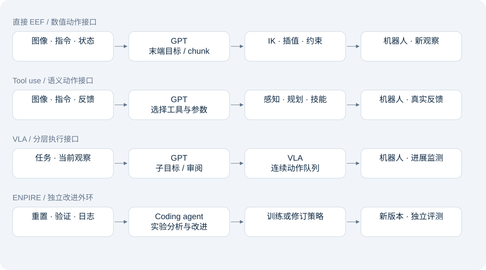
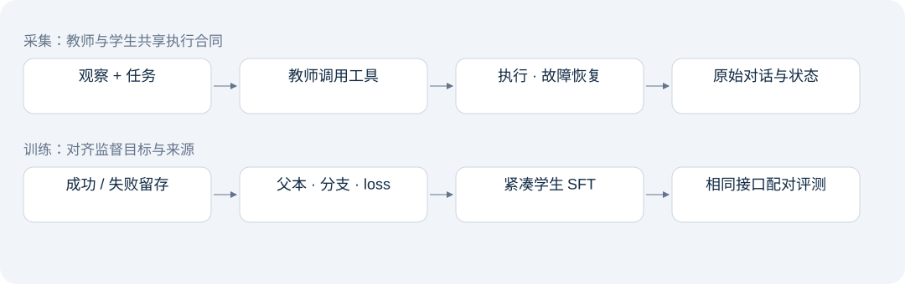
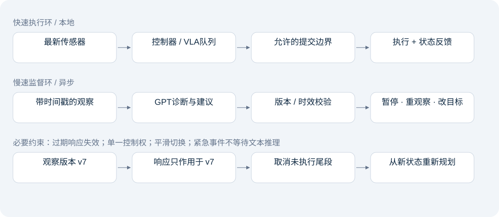

把 GPT 的操作能力留在本地：我们的 Piper 蒸馏与工具修复实验
杨晨杰 · RUA / Field Notes · 2026-11-24
我们真正想解决什么
我最初关心的不是“给机器人接上一个更大的模型”，而是能否把通用 VLM 的工具编排能力留在一个可以本地部署的小模型里。直接依赖远端 GPT，推理成本、请求延迟和网络都会进入任务执行；学生模型即使能正确输出工具名，也可能在感知、抓取和恢复上连续失败。
这段工作逐渐分成三个问题：数据能否完整进入训练；学生能保留多少操作能力；执行工具本身是否限制了这份能力。 最后一个问题，往往在看到失败视频后才变得具体。
本文以我们的 Piper 实验为主线。Guava、Astranomy、ENPIRE 等项目只用于解释接口与研究定位。不同项目的 SR 不放在同一张排行榜上；本地开发诊断、冻结评测和论文中的待验证设想，也不合并成一个“最终提升”。
先把机器人接口画清楚

三种执行接口与一个改进外环
GPT 接机器人时，两种常见接口分别是：直接输出 EEF 位姿／目标序列，以及输出语义工具调用。前者由局部控制器做 IK、插值与跟踪；后者把感知落地、接近、抓取等能力封装在 get_position_and_size、align、grasp、move 中。两者都需要控制器，“直接”不等于输出电机力矩。
我们的主要实验属于 tool-use：观察、指令、机器人状态与真实工具反馈形成多轮对话，GPT 决定下一次工具调用。工具实现承担一部分几何与运动负担，也因此成为误差来源。Guava 给了我们共享教师／学生接口的参照；我们的移植与排查围绕 Piper 展开，不能把它称为原 Panda 实验的严格复现。
直接 EEF 值得作为另一条对照路线。Astranomy 同时研究直接动作生成、agent 以及机器人策略提案审阅，说明不能只按“有没有 GPT”分类。我们还没有完成一组只改变 EEF／tool 接口、其他条件全部匹配的 Piper 对照，所以本文不声称工具路线已经战胜直接路线。
VLA 还能作为下层动作策略：上层模型给子目标或检查进展，VLA 生成连续动作。它可以与前两条路线组合。与之不同，ENPIRE 主要组织重置、验证、rollout 与策略改进的实验外环；这里把它单列，不塞进两种动作接口内部。
第一段工作：把教师交互变成真的训练输入

从原始工具交互到冻结训练集
实际训练输入是 1,041条记录：667条基础轨迹、374条恢复分支。学生是 Qwen3.5-4B，采用全语言模型 SFT，冻结视觉编码器与 aligner，训练3个 epoch。这里学习的是“看到什么后调用哪个工具、参数如何填写、失败后如何继续”，不是把连续视频逐帧回归成电机控制。
数据规模约为 29小时仿真执行时间，属于估算：759条录像时间元数据合计21.48小时，剩余282条按同任务、同基础／恢复类型的均值补估。API等待不计入；分支只按新增恢复片段计时。带有父对话前缀的训练样本，也不能解释成1,041条完全独立的从零执行经验。
这一步最容易被“训练程序启动了”掩盖。我们遇到过训练加载器没有按预期保留 tool_calls 和推理字段的问题，最后把采集时 assistant 的原始文本逐字放入实际受监督的 content，并核对图像顺序、参数与 loss mask。一个字段存在于 JSON 中，不代表优化器真的在学习它。
还需要保留一个不那么漂亮的事实：本轮按当时的选择直接训练，1,041条中包含27条带 rejected 审核标签的记录，其余也不是全部终审通过。没有在后续编辑论文时偷偷把这次训练改称“清洗后重训”。完整性、原任务成功和独立质量审核是不同门槛。
第二段工作：学生确实提升了，但提升到哪里要说清
下面是我们从原始实验目录核对的配对结果：15任务，每任务30次，共450场景；同一冻结采集运行时、同样观察和工具，按原任务成功判据计数。它使用2048输出预算，与另一轮官方评测入口的8192预算结果不同。
| 任务 | 蒸馏前成功 / 30 | 蒸馏后成功 / 30 |
| 抓起胡萝卜 | 0 | 3 |
| 番茄放到土豆旁 | 0 | 5 |
| 柠檬入箱 | 0 | 1 |
| 推锅 | 4 | 18 |
| 方块反向堆叠 | 0 | 1 |
| 苹果与果汁反向排序 | 23 | 19 |
| 箱子与托盘 | 0 | 0 |
| 摆桌 | 0 | 0 |
| 罐子入箱 | 0 | 14 |
| 苹果与果汁排序 | 0 | 5 |
| 托盘取方块 | 0 | 3 |
| 推篮 | 5 | 28 |
| 关闭抽屉 | 0 | 4 |
| 杯子游戏 | 1 | 14 |
| 红色物体入篮 | 0 | 22 |
| 合计 | 33 / 450 · 7.33% | 137 / 450 · 30.44% |
最直接的答案是：这轮蒸馏增加104次成功，净增 23.11个百分点。但收益很不均匀：推篮和红色物体入篮改善明显，反向排序退化，箱子与托盘和摆桌仍然为零。平均数不能替代失败分析。
七个示范来源任务在这轮测试中从6/210提高到90/210；另外八个没有进入该蒸馏示范集的任务从27/240提高到47/240。“没有进入示范集”只描述本项目的数据暴露，不意味着基础模型从未见过相关概念，也不是所有新环境上的泛化保证。
教师差距仍需要同版本、同判据的第三行。我们此前核对的该冻结实验协议明确没有匹配的 Astra 450场景结果。最新论文材料另有作者确认的311/450教师原判据计数和150/450学生计数，但本文尚未将这两组数字逐条对齐到上述137/450实验，因此不混用它们计算差距。供稿结果和独立复算结果必须标清来源。
第三段工作：很多失败不在“下一步工具选错了”
我们开始逐层看失败：物体有没有被正确识别？目标是否落到正确坐标？指尖是否真的到位？释放后任务是否仍成立？以下都是排查中实质改变判断的例子，而非全任务稳定性证明。
粗碰撞体会让正确动作看起来不可执行
原手指主体的粗包围盒，在一些接触点上距离真实 CAD 约19–26毫米，制造了假接触。替换为原 CAD 凸包后，一部分接近失败得到改善。但凸包仍会填平凹陷，而且指尖附近的真实碰撞仍然存在，不能把所有穿入都归因于旧盒子。
这让我改变了调试顺序：先审计几何与接触，再决定让教师多想几轮。否则模型可能花很多 token，绕过一个本不应该存在的障碍。
姿态、指尖与 TCP 必须一起变换
红物抓取中，我们定位到上一姿态计算的指尖偏移，被用于重新选择倾角后的路径，导致下降时约5.4毫米侧偏。按每段姿态同步换算指尖目标后，两个历史开发场景得到改善。这是具体的执行器修复，不能写成语言推理能力提升，也不能凭两个场景宣称随机场景全部解决。
果汁又是另一类问题：源资产编译质量约0.138克，修正质量会改变受载保持。我们最后明确设定70–140克的仿真随机范围，属于工程假设，而不是真机称重标定。新恢复分支必须继承父本模型和质量，不能无声修改旧检查点。
“右边的杯子”不是一个稳定身份
杯子游戏里，不同空间描述可能得到几乎相同的 SAM 掩码；搬动之后，当前图像的左右顺序也不再对应最初那只杯子。增加多实例筛选、拒绝合并掩码、记录公开已检查杯的位置能改善部分病例，但这些改动还有动作预算和接触深度问题。
我得到的教训是：多轮任务需要状态身份，而不仅是更长的对话。感知失败要能返回“无法可靠区分”，不能把随便选中的目标包装成确定观察。
论文给了框架，案例给了约束
我们当前论文用 Tool Evolution for Robotic Manipulation 的视角整理问题：先冻结学生，让独立生成器根据执行证据修改受限工具控制程序；冻结选中的 harness 后，再研究学生经验能否回流到权重。动作接口保持固定、评估器不在可写范围内，是这套设计的边界。
但我不能把论文里所有数字都当成已经跑完的结果。最新补充材料明确标注：工具演化、RFT、验证器与真机的部分汇总比较属于假设结果，用于说明研究设计；这些还需要完整逐次记录和独立复核。因此，本文用论文阐述问题与方法，用可追溯记录支撑已经做过的结论，不引用假设总表作为“我们的实测提升”。
逐条仿真案例的价值反而更直接。补充材料整理了20组场景、65次执行。其中一个杯子案例在同一原 harness 下，Base 到25次调用上限时方块仍在桌上，SFT在14次调用后把方块抬起约14.1厘米；这是单场景行为差异，不是总体成功率估计。
另一个排序案例更重要：排序与释放保持窗口都通过，但苹果最终已落到桌面以下。原生成功标志可以和物理任务目标分离。 这说明需要检查桌面支持、空间范围和状态保持，但一个反例不能推导总体假阳性率，也不能替代450场景的重审。
我希望保留下来的框架，是把“修执行器后的收益”和“权重学会后的收益”拆开测：固定学生比较工具版本，固定工具比较训练版本，再看组合。理想的组合曲线、显著性或真机总收益，必须等对应执行证据齐全后再发表为结果。
一个没继续堆复杂度的方向
在32个旧开发布局中，我们做了感知估计与抓取方向的干预。重观察确实能救回部分失败；但一个简单的稳健几何估计也解释了不少收益，未建立复杂学习路由的必要性。事后查表挑每场最好的策略，是 oracle 上界，不是可部署策略。
这个结果让我更谨慎地使用“自我改进”：修提示、修工具、保存代码技能、更新权重，都会改变系统，却不是同一件事。ASPIRE 提供了技能复用的公开参照，ENPIRE 提供实验外环参照；我们的旧开发布局结果还不足以支持同等规模的自主改进主张。
这些数据到底在训练谁？
我们的数据训练的是开放学生权重。教师 API 看到图像、指令和工具反馈，是推理过程；把数据放进上下文，不会让这次请求自动更新 GPT 权重。我们也不能从演示反推出闭源 GPT 实际用了哪些具身数据。
可公开复核的另一条路线是 VLA：RT-2 把动作表示为 token，并与视觉语言数据共同训练；OpenVLA 提供开放模型及训练实现。它们学习的动作目标与我们的多轮工具文本不同，所以“机器人数据多少小时”之外，还应说明动作频率、采样方式、监督目标和重复前缀。
我的判断是，是否拥有更多视频并不是唯一瓶颈。图像与动作没有对齐、工具调用没被 loader 保留、成功标签不可信，都可能让数据规模失去解释力。
VLA 在执行时，GPT 能不能插手？

快速执行与慢速监督的提交边界
这是我们接下来想探索的方向，尚不是已经部署的实验结论。先区分模型计算延迟、action chunk 覆盖时长和整任务时长：VLA不一定慢，远端 GPT 也可能是最慢的一环。
LeRobot 异步推理 与 Real-Time Chunking 说明执行当前段与计算下一段可以重叠，但它们不自动提供GPT中途抢占能力。Gemini Robotics ER 的上下层协作和 Astranomy 的提案审阅，则是分层接口的参考；执行前审阅与执行中取消仍应分开验证。
我会先尝试“快速本地执行、慢速异步监督”：GPT只给出继续、暂停、重观察或改子目标建议；执行器检查观察时间、任务版本和控制权，在允许的边界提交。未执行动作尾段可以取消，过期响应必须丢弃，切换要保证速度连续性。紧急限位或失稳交给本地快速机制，不能等待文本生成。
真正值得测量的是：一次额外干预救回了多少场，又因延迟和误判破坏了多少场。比较VLA单独执行、周期审阅、事件触发审阅时，应使用相同扰动时刻和预算，同时记录响应年龄、误干预、完成时间与成功率。
接下来的三个检查点
1. 补齐同冻结协议的教师对照及原始逐条来源，先回答学生与教师差距，而不混用不同版本总数。
2. 在未用于调试的新布局上，对比简单几何修复、固定重观察和学习路由；证明复杂机制确有增量后再训练。
3. 让工具收益与权重收益分别接受匹配对照；论文中的假设结果只有经真实执行复核后，才能变成博客里的经验结论。
这段工作的收获，是把失败从一句“模型不够强”拆成可检查的接口问题。蒸馏带来了可见的学生增益，工具排查解释了其中一些执行短板；更大的自主改进故事，还需要逐条证据来完成。
来源与阅读
本地证据：冻结SFT导出与训练完成记录；15任务配对原始汇总；Piper几何与感知干预记录；本文作者提供的 TERM 正文修订及2026-11-24 v7补充材料。未公开论文源文件和私人聊天不随博客上传。供稿计数、已复算计数、单案例和假设结果在文中分别标明。
公开参照：Guava · Astranomy · ENPIRE · ASPIRE · RT-2 · OpenVLA · LeRobot async · RTC
版式参考 Distill 的窄正文与图注阅读体验，图示为原创概念示意。AI协助整理文字和记录；个人判断及公开发布内容由作者复核。